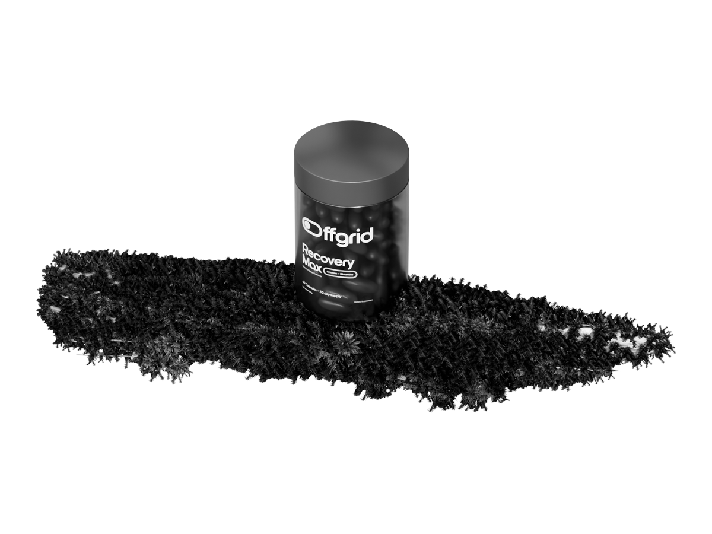
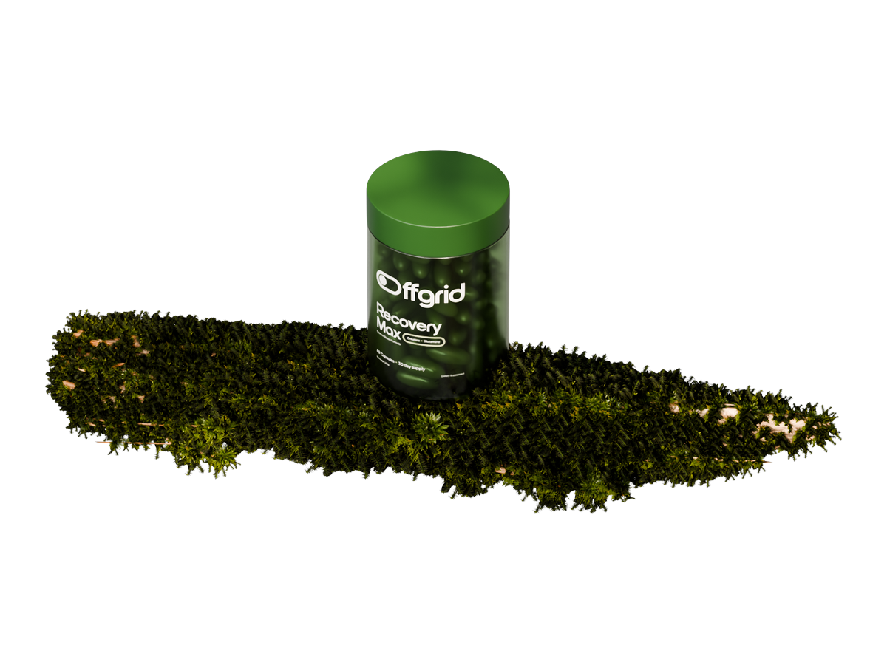
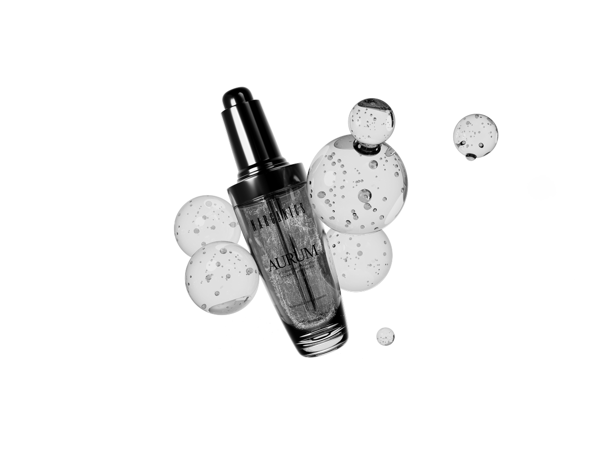
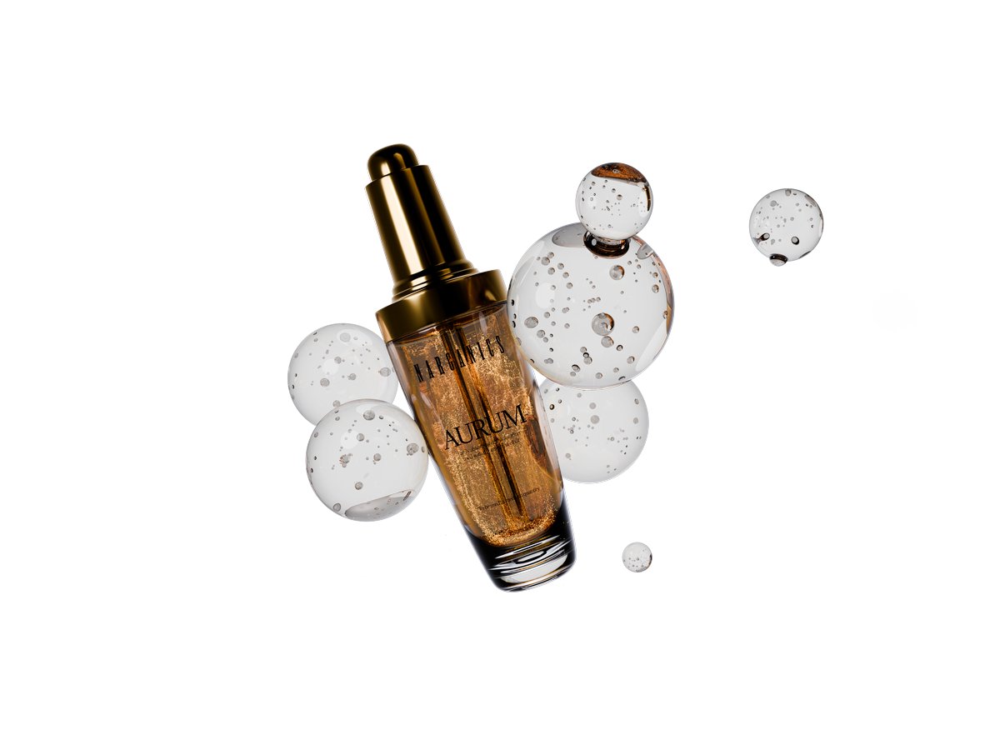
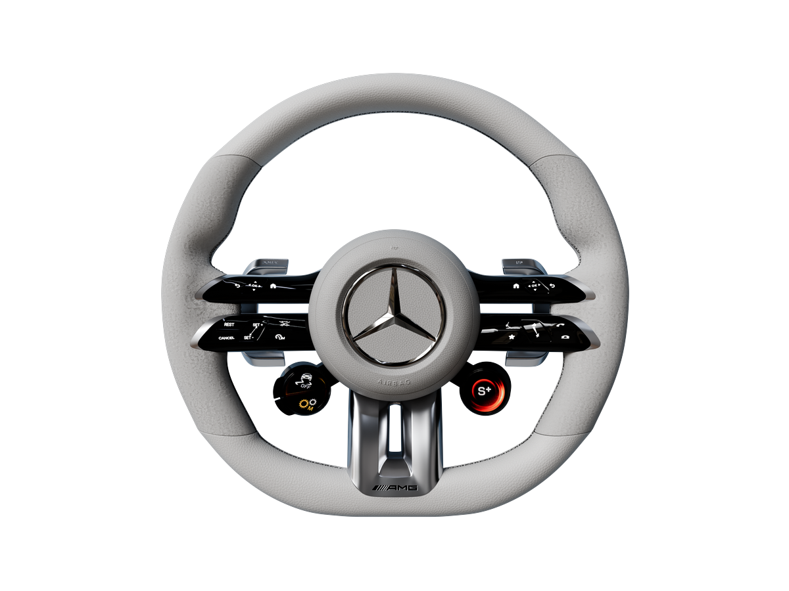
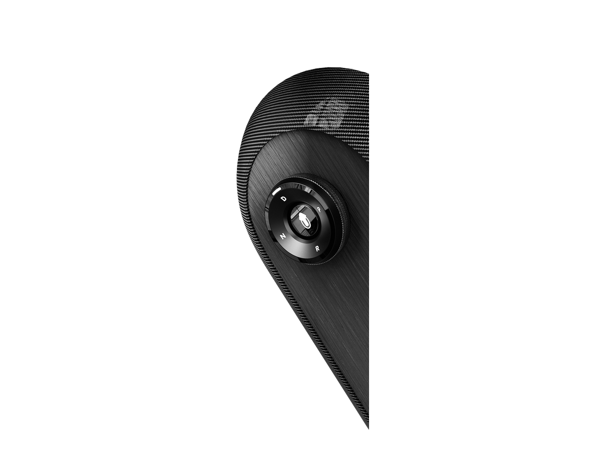
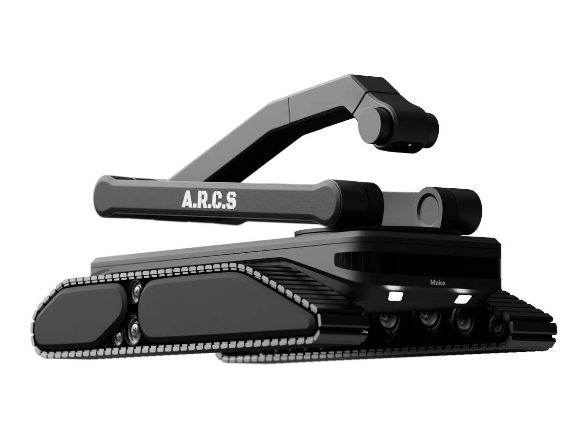
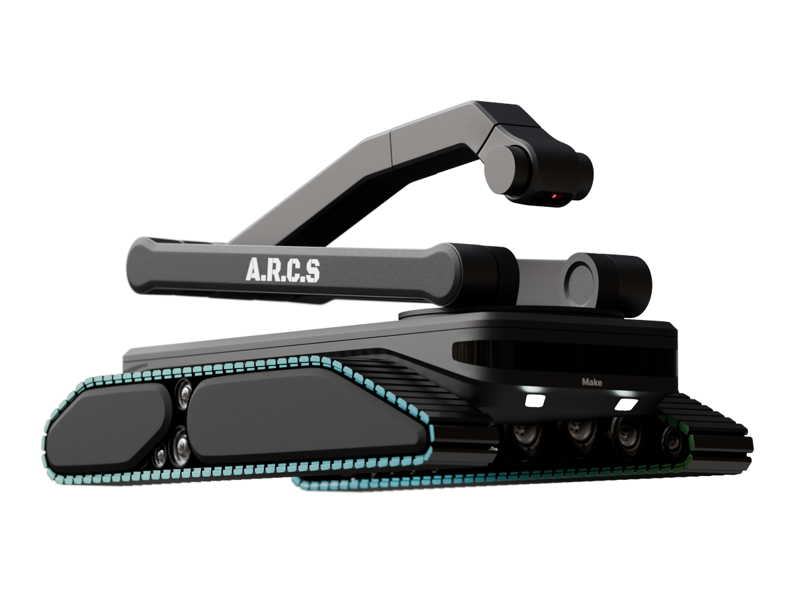

Product visualization on one side, industrial design on the other. Filter by either.


A recovery supplement jar sitting on moss, rendered up close.


A gold serum dropper bottle surrounded by glass spheres.

A performance steering wheel with its hub, paddles and controls.

A rotary gear selector in carbon fiber and brushed metal.


A modular robot that scans and cleans oil tanks.
A mechanical keyboard with a detachable numpad and a control knob.